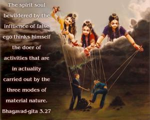
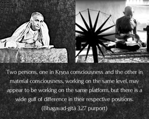
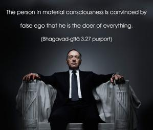
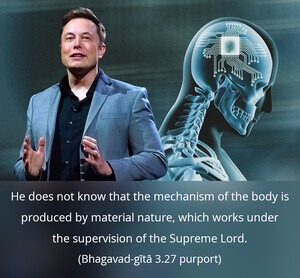

The spirit soul bewildered by the influence of false ego thinks himself the doer of activities that are in actuality carried out by the three modes of material nature.




Two persons, one in Kṛṣṇa consciousness and the other in material consciousness, working on the same level, may appear to be working on the same platform, but there is a wide gulf of difference in their respective positions. The person in material consciousness is convinced by false ego that he is the doer of everything. He does not know that the mechanism of the body is produced by material nature, which works under the supervision of the Supreme Lord. The materialistic person has no knowledge that ultimately he is under the control of Kṛṣṇa. The person in false ego takes all credit for doing everything independently, and that is the symptom of his nescience. He does not know that this gross and subtle body is the creation of material nature, under the order of the Supreme Personality of Godhead, and as such his bodily and mental activities should be engaged in the service of Kṛṣṇa, in Kṛṣṇa consciousness. The ignorant man forgets that the Supreme Personality of Godhead is known as Hṛṣīkeśa, or the master of the senses of the material body, for due to his long misuse of the senses in sense gratification, he is factually bewildered by the false ego, which makes him forget his eternal relationship with Kṛṣṇa.